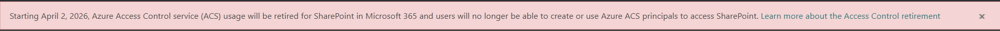
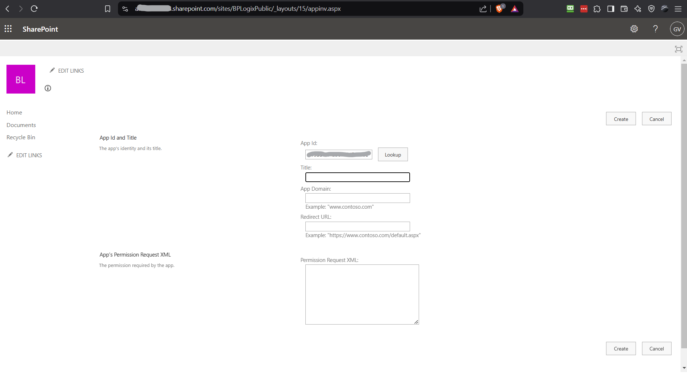
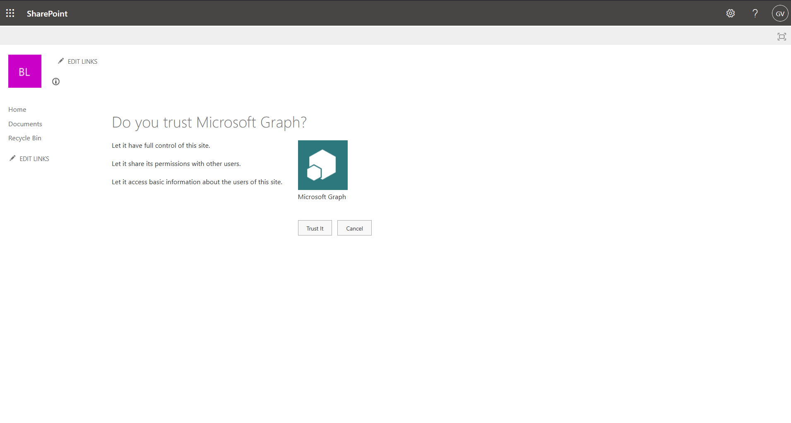
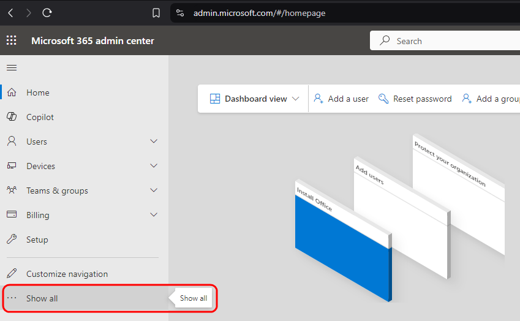
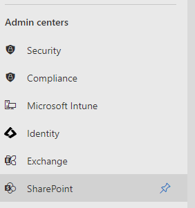
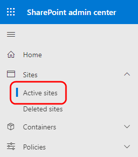
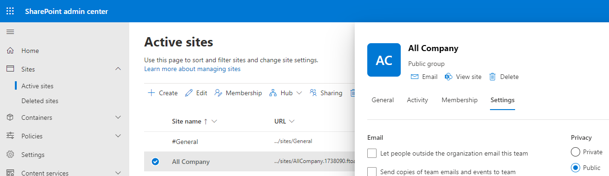
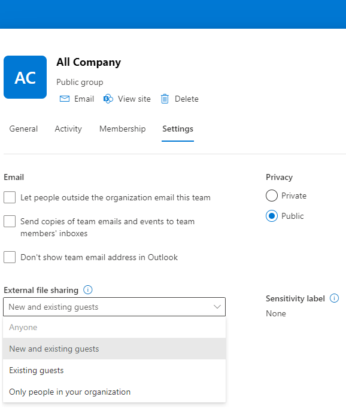
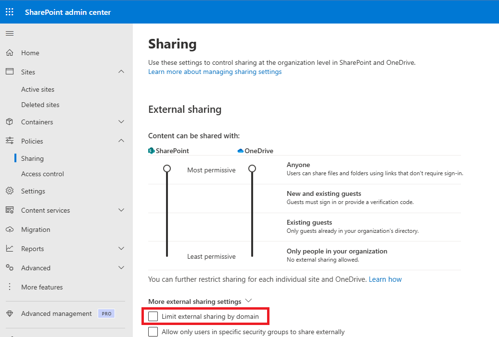
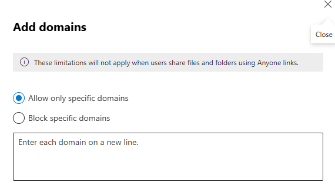

A PDF file for end-to-end Azure/Entra configuration for all Process Director features can be found here: Configuring Azure For Process Director (PDF Download)
A PDF file for end-to-end Azure/Entra configuration for all Process Director features can be found here: Configuring Azure For Process Director (PDF Download)
A PDF file for end-to-end Azure/Entra configuration for all Process Director features can be found here: Configuring Azure For Process Director (PDF Download)
 This topic discusses a product feature in active development, and is subject to change at any time.
This topic discusses a product feature in active development, and is subject to change at any time.
To configure SharePoint for external access, there are two procedures you must complete:
We'll discuss each step in order, below.
You may encounter the following warning on the web page when performing the steps that follow. The BP Logix Team is aware of this issue and actively working with Microsoft to prevent any future service disruptions or configurations difficulties before this April 2026 deadline.

In order for Process Director to properly create links to Word documents in Review (or “Track Changes”) mode, an additional admin action must be performed. Otherwise, users will encounter errors open forms with attachments intended to be reviewed.
https://<your-tenant-name>.sharepoint.com/<“sites” or “teams”>/<your-site-or-team>/_layouts/appinv.aspx.
<your-tenant-name>.sharepoint.com to the App Domain field.<AppPermissionRequests AllowAppOnlyPolicy="true">
<AppPermissionRequest Scope="http://sharepoint/content/sitecollection/web"
Right="FullControl" />
</AppPermissionRequests>
Once you've completed these step, SharePoint should now be configured to enable review mode, which will enable external users to review and edit documents, after yo set up external access below.
Once you've configured Azure/Entra, and transmitted the appropriate information to BP Logix, you may need to make some changes to your SharePoint installation to enable its access for CDA, as a final step in this process. For some customers, this won't be necessary, since every user who accesses the documents for CDA will be valid, authenticated users of your Azure/Entra tenant. In many cases, however, you'll need to provide access to the documents for review or editing by users outside of your organization. In that case, you'll need to provide those external users with access to your SharePoint installation, to enable them to participate.
To do so, you'll first need to go to admin.microsoft.com to access your Microsoft 365 Admin Center. Once the admin center main page opens, you'll need to click the Show All menu item that appears in the sidebar on the left side of the page. Clicking this item will expand the sidebar to show additional menu items.

When the new menu items appear, you'll need to scroll down to the Admin Centers section, and select the SharePoint menu item.

Clicking the SharePoint menu item will open a new browser tab to display the SharePoint Admin Center. On the left sidebar of the page, you'll need to click the Sites menu to expand it, then select the Active Sites menu item.

Clicking Active Sites will display the Active Sites page, listing all of your currently active SharePoint sites. Find the Web site in the list of sites, and click on it to select and expand it. When you do so, an informational pane for the selected site will appear on the right side of the page.

In the informational pane, a series of tabs will be displayed, just below the header information and logo. You'll need to click the Settings tab to display its contents.

In the Settings tab, select either Anyone or New and existing guests from the External file sharing property options. You must choose one of these options to enable external sharing to users from outside of your organization. There are different security implications for each item. New and existing guests is a more secure option that verifies external users by sending a one-time password (OTP) to their email address. While more secure, some organizations may find this too cumbersome for their use-case. The Anyone selection enables access to documents without the additional OTP verification. Irrespective of which option you choose, it will require specially crafted URLs to access individual documents. You'll need to refer to Microsoft’s SharePoint documentation for more information about that.
In some SharePoint installations, there may be some additional settings that prevent external users, i.e., those outside of your Azure/M365 tenant, from accessing shared documents. This issue can occur if the Limit external sharing by domain property is enabled in your global (tenant-wide) SharePoint settings. This feature resides within the SharePoint Admin Center under Policies > Sharing.

Either disable this feature altogether by unchecking it or, if you wish it to remain checked, you must be sure that all of the expected domains for email addresses to be used on the system are included in the Add Domains screen for this property setting. You can also configure the inverse, and exclude specific domains, though, in most cases, this will not be the optimal option.

Once you've set the desired External file sharing property option, you can click the Save button to save it. Once saved, the appropriate external users will be able to access the documents they need to access when participating in the editing/collaboration process.
This step, combined with the changes made to your Process Director installation, should fully enable M365 for use with the product's CDA feature.